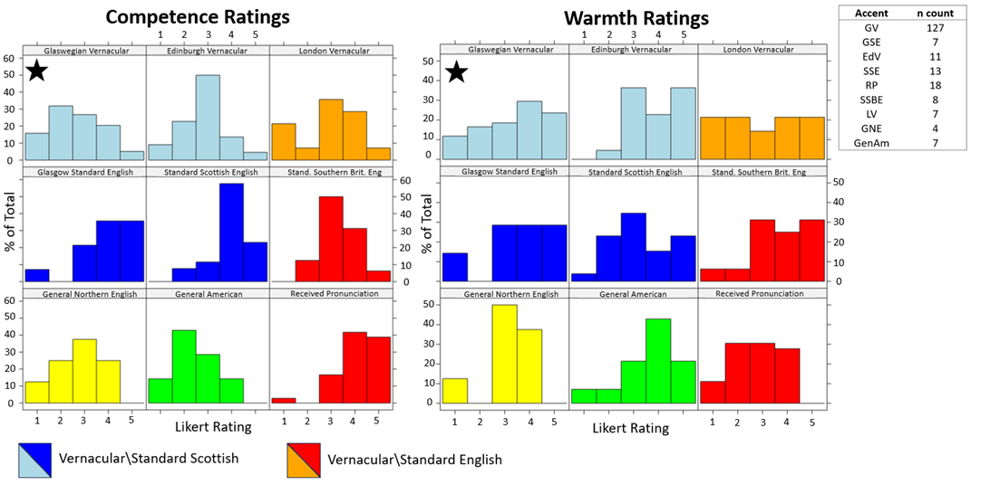

Research
Here is an explanation of my research projects, current and past. I have summarised my research so that it is accessible for both linguists and non-linguists (hi Mum!)
For further information, links to publications are provided. Some may still be work in progress and may not yet have an output - but please get in touch if you’d like to know more!

Accentuating Identities
For part of my PhD research, I am interested in how accents are used in the media. Accents can be used to build character identities, by allowing us to rely on social stereotypes present in society. Using accents and language varieties can be a useful technique to cultivate these fictional worlds, but it can lead to accent bias and accent-based stereotyping in society.
To look at how accents are portrayed in the media, I have conducted a quantitative content analysis which focuses on the Glaswegian vernacular (GV) accent.

I presented the results of my research at BAAP2024, March 2024. Below I will give a brief summary of the findings (get in touch if you want to know more!)
A total of 5825 data points was coded by a team of coders, looking at 233 characters across 12 films. These characters were rated across 25 separate dimensions relating to social attributes, behaviours and their accent variety. I am focusing on the Glaswegian vernacular accent, a heavily stigmatised accent spoken by working-class Glaswegians.

Above shows the warmth-competence space of the characters, which have all been grouped by accents. There are 9 accents on show, with Glaswegian vernacular shown with the black star. The top row contains all the vernacular accents, with their standard counterparts directly below for comparison. The warmth and competence of a character was measured using a 5-point Likert scale, where 1 is least and 5 is most of a given attribute.
We can see that Glaswegian vernacular characters are downgraded in competence overall (bigger skew to the left), whereas they are upgraded in warmth. It is interesting to see that this reflects what we find in research where working-class, vernacular speakers are evaluatively downgraded across status-related traits.
Want to see something cool? I know you do. Based on the data, I have computed the probability of an imaginary character’s portrayal depending on the accent they have. Let’s have a look at profanity use with some very pretty and colourful graphs.

So, if our imaginary character was an adult male (main character) then we can see the chances of how much they would use profanity use. Remember, a rating of 1 relates to low instances of the attribute and 5 is extremely high instances of the attribute (in this case: no swearing versus a lover of ‘effing and jeffing’).
If our character was a Glaswegian vernacular (GV) speaker, then we can see the increased likelihood of them being extreme profanity users (very large proportion of their bar is red = 5). However, if we look at a standard accent like Received Pronunciation or Standard Scottish English, then they are much more likely to be low to minimal profanity users.
Overall, the accent portrayals in this study were found to be biased and present statistically significant patterns of social stereotypes. Glaswegian vernacular characters were downgraded in competence and intelligence, and showed heightened instances of negative attributes such as aggression, profanity use, substance use and crime.
My next steps will be using the patterns found in this study to help develop the stimuli for my experiment, that will be using eye-tracking techniques (oooh, ahhh).
To see some examples of these media portrayals, I have created an RPubs file with videos from the films, and information about my methods.
For those interested, intercoder reliability was achieved between coder frameworks and attribute-specific comparisons. To analyse patterns between mediated accent performances, non-parametric testing was conducted (Kruskal-Wallis test and post-hoc Dunn test). Cumulative Link models and probabilistic ordinal logistic regression models were also fitted.
A Game of Phones

For my Masters dissertation, I conducted a socio-phonetic analysis of Yorkshire English performances in the television series, Game of Thrones. I presented my research at the International Congress of Phonetic Sciences 2023.
The use of accents in media sources such as Game of Thrones fascinates me. When we have fantastical worlds like Game of Thrones, the audience needs quick access to lots of contextual information to build the multiple layers of the world, and the characters within. Things like different cultures and societies, hierarchies and even stereotypes of individuals and groups can be informed by the use of accents, through our associations with the real world. For example, the powerful Lannister family in the south of the Kingdom speak a prestigious accent type (Received Pronunciation: RP). In our world, we often associate RP speakers with royalty and high-society. When we encounter fictional characters with an RP accent, we may map our present knowledge and expectations of real-life RP speakers on to these characters.

For my research, I conducted an acoustic analysis of three speakers in the series: the native Yorkshireman Sean Bean. And the imitated Yorkshire performances of the two non-native Yorkshire speakers from southern England (Kit Harrington) and central Scotland (Richard Madden). The Yorkshire variables of the STRUT-FOOT vowel merger and GOAT & FACE monophthongal variants were analysed. I also investigated listeners’ perceptual judgements of the Yorksire performances in relation to accent credibility and even speaker origins.
For those interested, to measure the tokens in the STRUT-FOOT merger set, f1 and f2 formant measures were extracted at the vowel midpoint. To analyse vowel trajectories in the GOAT and FACE vowel tokens, f1 and f2 formant measures were extracted at the 25%, 50% and 75% vowel midpoint. All vowel measurements were normalised.
In most Yorkshire accents, the STRUT and FOOT vowels [ʌ-ʊ] are merged. If you heard me say these two words, the vowels would sound exactly the same and produced from quite a centralised position. Most accents have these two vowels split in their inventory, so I wanted to see if the non-native Yorkshire speakers can produce the merger set that we’d expect in Yorkshire English. Drum roll please… Unfortunately, we can see the non-native speakers struggle to produce a merger set like with Sean Bean (SB) on the right. Kit seems to struggle a bit more with this and hitting the consistent central position found in Yorkshire English.

(Jackson, 2023)
Some more great aspects of Yorkshire speech are the monophthongal GOAT and FACE variants [eɪ, əʊ]. Most likely you will hear these vowels produced as diphthongs. This is where you produce a particular vowel and whilst you’re still producing this sound, your tongue moves in your mouth. This is what perceptually makes it sound two separate vowels if you say it very slow. In Yorkshire English, there is minimal tongue movement which is what makes it a monophthong.


We can see Sean Bean (SB) to demonstrate this minimal movement with the FACE vowel. However, when the non-native Yorkshire speakers were trying to imitate a Yorkshire accent you can see their FACE vowels is not like Sean’s at all. There is a lot of movement here between vowel trajectory points (where the vowel was measured at 25%, 50% and 75%). Acoustically, we can see that the imitated Yorkshire performances diverged away from Bean’s native Yorkshire speech. Let’s see if listeners were able to pick up on this.
I wanted to see whether lay-listeners (non-linguists) could also pick up on these acoustic differences in the Yorkshire performances. To make things more interesting, I split the up by their own accent - either as native Yorkshire speakers themselves or non-native Yorkshire. I found that both listener groups rated Sean Bean as the most credible Yorkshire accent speaker (4.6 rating out of 5). I found that native Yorkshire speakers rated Kit as the least credible, but non-native Yorkshire speakers to rate Richard as the least credible. I have some hypotheses around the different perceptual ratings by my listeners so please get in touch if you’d like to know more!
I also had listeners predict where they thought the speakers in the recordings may be from. There are no surprises that all (both groups) correctly predicted Sean Bean’s origins. Some non-native Yorkshire listeners gave a broader prediction (e.g., Northern England). Whereas the native Yorkshire listeners demonstrated their greater acoustic sensitivity to the accent type by pin-pointing Bean’s origins to be Sheffield, South Yorkshire, etc. Overall, listeners correctly identified Kit Harrington to hail from the South (e.g., London, Southern England, ‘somewhere posh’). Richard Madden was a bit trickier for listeners. Both groups were inconsistent, with some saying southern England, some saying Lancashire or Liverpool. However, all the Scottish listeners were able to correctly identify Madden as being Scottish, whereas no other listener could do this. Again, for more chats about my hypotheses on this then get in touch. But overall, we see listeners to pick up these acoustic discrepancies in their perceptual ratings. They could even use their Yorkshire performances to detect the speaker’s actual origins.
To sum it up, the non-native Yorkshire speakers failed to consistently produce the phonetic variables expected of a native Yorkshire speaker. Lay listeners were able to pick up on these inconsistencies and used it to even predict where the speaker may actually be from! In my research publication, I talk more about the use of accents in the media and whether relying on stereotypes to build these fictional characters may be further reinforcing them.

Upcoming projects…
Pssst… There’s a few more things I’m working on in the background. I’ll have them posted up here very soon.